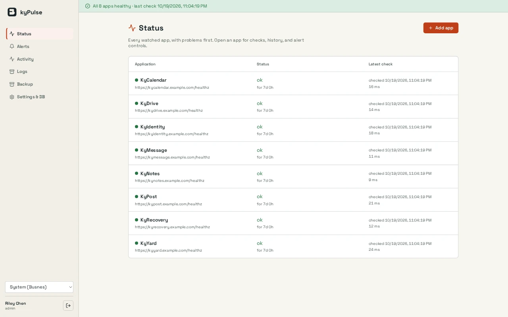

Read-only by design
KyPulse polls each app’s health endpoint and reads container facts from KyYard. It never changes the apps it watches.
KyPulse / Monitoring
Read-only health and log monitoring for your Ky apps, with alerts sent to the webhook of your choice.
Open source (MIT) · TestedScreenshots
Example screens from local builds with fictional data. Appearance varies by version.

Inside KyPulse
KyPulse polls each app’s health endpoint and reads container facts from KyYard. It never changes the apps it watches.
An app is marked down after three failed polls and degraded after two, with hourly reminders and silencing. Problems sit in an alert bar on every page.
Send alerts to ntfy, Gotify, Discord or any webhook. Tokens are write-only and sealed at rest.
Pair KyYard to collect container logs, or ship them from any Linux host with kypulse-send. Administrators can search seven days of history.
Activity is kept in a tamper-evident audit trail, with administrator and viewer roles.
Sign in locally with MFA or configure KyIdentity/OpenID Connect. Pair KyRecovery for sealed backups. SAML metadata is present, but SAML login is not implemented.
How it fits together
KyPulse reports problems; it cannot restart or repair an app. A monitor on the same host as the apps goes down with them, so send alerts to a service that runs elsewhere.
Read the Busnes.app privacy policy. For data on an independently operated installation, contact its operator.
Next step
The README covers installation, health endpoints, webhooks and KyYard pairing.